Trillionaire Punks Trillionaire Punks NFT - 常见问题（FAQ） ▶ 什么是亿万富翁朋克？ Trillionaire Punks 是一个 NFT（不可替代令牌）集合。存储在区块链上的数字艺术品集合。 ▶ 存在多少 Trillionaire Punks 代币？ 总
Tripcat NFT 在宣布之前，我们要感谢长期以来一直等待和喜爱Tripcat NFT的每一个人。 Tripcat NFT 的普通会员铸造从 4 月 20 日星期三 21:00 开始。 更多细节在评论中。 为您
Trippin' Pixel Ape 经过 FDBA09 10,000 只猩猩陷入了神秘而有魅力的领袖 Chorles 的恍惚状态，但别担心……这绝对不是邪教。 Trippin' Pixel Ape NFT - 常见问题（FAQ） ▶ 什么是 Trippin' Pixel Ape？ Trippin' Pixel Ape 是一个
trippingoblin.wtf trippingoblin.wtf NFT - 常见问题（FAQ） ▶ 什么是 trippingoblin.wtf？ trippingoblin.wtf 是一个 NFT（不可替代令牌）集合。存储在区块链上的数字艺术品集合。 ▶ 存
Trippy Ape Pixel Club Trippy Ape 像素俱乐部统计 创建于 8 个月前 6,000 代币供应 10% 费用 过去 7 天没有售出 Trippy Ape Pixel Club。 多边形链上 6,000 个像素猿的集合，托管在 IPFS 上。 任何仍未上市的猿类都
Trippy Frens 3D Trippy Frens 是以太坊区块链的 5,000 个 NFT 的迷幻集合。我们正在建立一个喜欢探索其他领域最远距离的 Fren 社区。想成为弗伦斯吗？ 贵宾免费 我们 2D Trippy Frens 的持有者有资格从我
Trippy Ninjas 迷幻忍者统计 创建于 5 个月前 20 代币供应 2.5% 费用 过去 7 天没有售出幻影忍者。 Trippy Ninja 官方公布 4 月 12 日 这些 Trippy Ninjas 已准备好在 Polygon 区块链上狂奔。 带着一些他们能找到
Trippy Strokes 什么是艺术铸造？ Art Foundry在以太坊区块链上制作实验性的生成艺术。L3xc (Lim) 是一位软件工程师、设计师和生成艺术家，他创立了 Art Foundry 来记录他创
Trippy Toonz 特里皮图恩茨统计数据 创建于 3 个月前 1,582 代币供应 2.5% 费用 过去 7 天没有售出 Trippy Toonz。 Trippy Toonz 是一个非官方的粉丝制作系列，灵感来自 DEGEN TOONZ 和 TRIPPY TOADZ。
Trippy3Landers 5,555 名 Trippy3Landers 生活在不断的旅行中，前 2,555 名免费，之后免费 0.0055 ETH。20 每笔交易。ERC721A 气体优化项目。 捐赠该项目所有利润的 20% 以支持乌克兰。拿出 10%
TrippyMoais TrippyMoAI 是在以太坊区块链上绊倒的 69x69 Moai Heads。MoAI 是由人工智能 (AI) 软件创建的。（不）幸运的是，我们的 AI 在创建我们的 MoAI 之前就被喂了 200 毫克的魔法蘑
Tripster NFT Official Collection Presale 社区 Tripsters 的真正力量在于我们能够通过交互式实用程序连接社区。Tripsters 将在 Web3 上汇集 12 个首屈一指的 NFT 社区，利用数量上的优势，并利用许多人的
Tripsters Baggies - Ape Drop 该系列包含 Baggies、Vials 和 Flasks。 Baggies：1 Baggie 为您提供 1 级旅行。可用于为 1 级、1 级至 2 级和 2 级至 3 级铸造 Tripp
Tripsters Official Collection Polygon 社区 Tripsters 的真正力量在于我们能够通过交互式实用程序连接社区。Tripsters 将在 Web3 上汇集 12 个首屈一指的 NFT 社区，利用数量上的优势，并利用许多人的
Triptych of the Architects by PR1MAL CYPHER 加密艺术家 PR1MAL CYPHER 在 Nifty Gateway 上发布包系列！ PR1MAL CYPHER 在因斯布鲁克和维也纳学习哲学、语言学、精神分析和艺术。过去他的艺术作品主要在油画领域。2020 年初，他
Troll Freakz Social-Society 巨魔怪胎社会社会统计 创建于 6 个月前 1,100 代币供应 10% 费用 过去 7 天没有售出 Troll Freakz Social-Society。 10.000 个自动生成的内向巨魔怪胎逍遥法外。由 Andre
Troll Game Casino 巨魔游戏赌场统计 创建于 7 个月前 500 代币供应 10% 费用 Troll Game Casino NFT 在过去 7 天内售出 3 次。Troll Game Casino 的总销售额为 27.12 美元。Troll Game Casino NFT 的平均价格为 9
Troll Game Invitation 巨魔游戏邀请统计 创建于 8 个月前 11,695 代币供应 10% 费用 过去 7 天内没有售出巨魔游戏邀请。 美好的一天旅行者，很高兴在这里见到你，欢迎来到这个神奇而危险的
Troll Game: Easter 2022 经过 Cawsp-Dev 这座雕像是为纪念巨魔游戏的结束而建造的：2022 年复活节活动。感谢所有参与了的人！ 巨魔游戏：2022 年复活节统计数据 创建于 5 个月前 11 代
Troll Game: Lands Troll Game Lands 官方统计 创建于 7 个月前 2,500 代币供应 10% 费用 Troll Game Lands 官方 NFT 在过去 7 天内售出 5 次。Troll Game Lands Official 的总销售额为 40.33 美元。一款 Troll Game Lands Official NFT 的平均价格为
trollcave.wtf trollcave.wtf 统计 创建于 3 个月前 5,648 代币供应 5% 费用 过去 7 天内没有售出 trollcave.wtf。 第5648章 trollcave.wtf NFT - 常见问题（FAQ） ▶ 什么是 trollca
Tronic Mini Racers 5,555 名 3D 赛车手 Tronic Racing 是 5,555 辆独特的 3D 赛车的集合，准备好在元宇宙中比赛。每辆车都是独一无二的，有自己的风格、油漆颜色和 50 多个改装件。 在 OpenSea 和 LooksRare 上完全可
True Plebs in Goblin Town 地精镇统计中的真实平民 创建于 3 个月前 426代币供应 4.4% 费用 Goblin Town NFT 的 True Plebs 在过去 7 天内售出 2 次。Goblin Town 中 True Plebs 的总销售额为 125.15 美元。Gobli
TRUE Status cards 来自您喜爱的品牌和游戏开发商的NFT 和游戏 维多利亚狂野西部 第一个具有游戏内 NFT 分发的 iGaming 项目。部分 NFT 将在神秘盒子中出售。NFT 所有者可以收集相册
TTAV - Time Travelling Anime Villains 时间旅行动漫恶棍 (TTAV) 是 888 个 NFT 的集合——生活在以太坊区块链上的独特数字收藏品。您的 TTAV NFT 在 VILLAINS.GAME 中兼作您的可玩角色 - 一款 P2E 质押游戏，以收集 TTAV 项目的原生
Tubby Buddies Tubby Buddies 统计数据 创建于 7 个月前 36代币供应 10% 费用 过去 7 天没有售出 Tubby Buddies。 你好！我们是 36 个 PFP Tubby Buddies！有态度的弗伦斯！Frens
Tubby Chicks Tubby Chicks 统计数据 创建于 7 个月前 3,333 代币供应 5% 费用 过去 7 天没有售出 Tubby Chicks。 如何购买小鸡？ 无需出价即可选择您喜欢的 Tubby Chick 提供您想要的任何东西（最
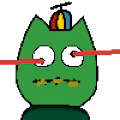 Tubby Kevin 大家好！ 我们很高兴推出 Kevin Tubbies！ 让我们做这个大 塔比凯文数据 创建于 6 个月前 549 代币供应 10% 费用 过去 7 天没有出售 Tubby Kevin。 凯文斯，但 tubby Tubby
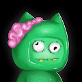 Tubby Kevins 塔比凯文斯数据 创建于 6 个月前 6,708 代币供应 2.5% 费用 过去 7 天没有售出 Tubby Kevins。 Tubby Kevins 是社区为社区制作的 Tubby Cats 衍生系列。如果您想查看原始的 Tubby Cats 系列，
TubbyAlien Official Tubby Alien 是一个拥有 100 个独特 NFT 的专属俱乐部，每个持有者都是我们社区的重要成员。Tubby Aliens 不仅仅是一个 NFT。它们是革命性的新品牌和角色世界的开始
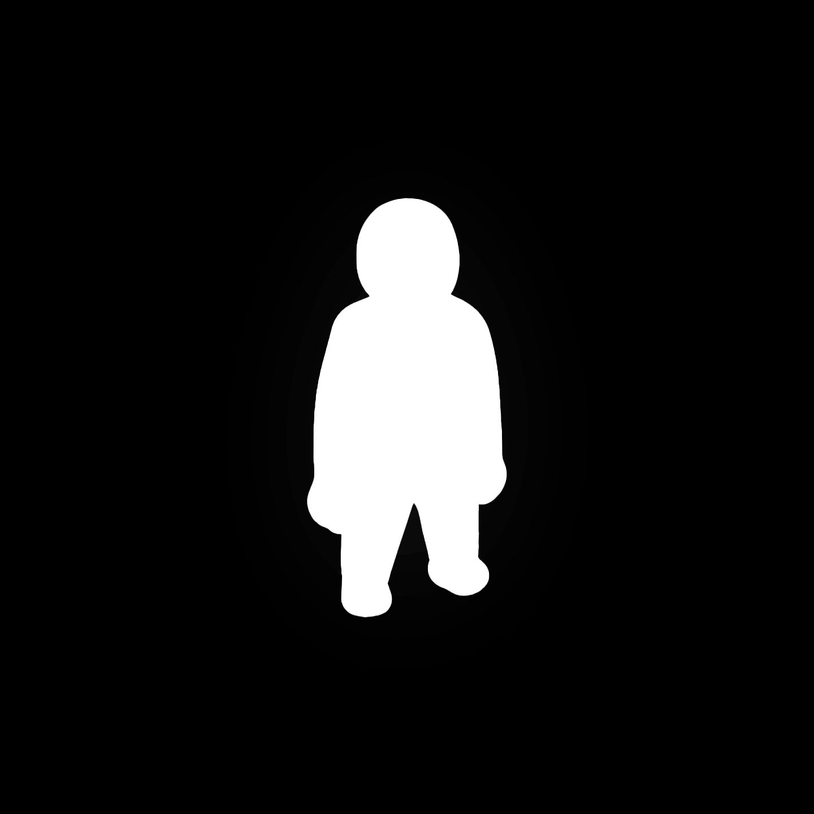 TubzSocialClub V2 TubzSocialClub 是一个反映我们价值观的项目，我们相信这将根据自己的价值观（即以自我提升为中心）改善我们志同道合的社区中的人们的生活。我们的目标是通过创建世
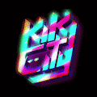 TUNA Pass 跳上金枪鱼铁路！此 TUNA 通行证作为 Kiki City 的实用代币，将允许任何持有者参与预售活动和未来的空投。TUNA Pass NFT - 常见问题（FAQ） ▶ 什么是金枪鱼通行证
Tunes Moon Pass V2 TUNES Moon Pass 是一种高实用性 NFT，可让您访问我们在元宇宙中的企业。会员将获得未来 NFT 收藏、私人赠品、私人不和谐频道、元宇宙开发、实物奖励和仅限会员的
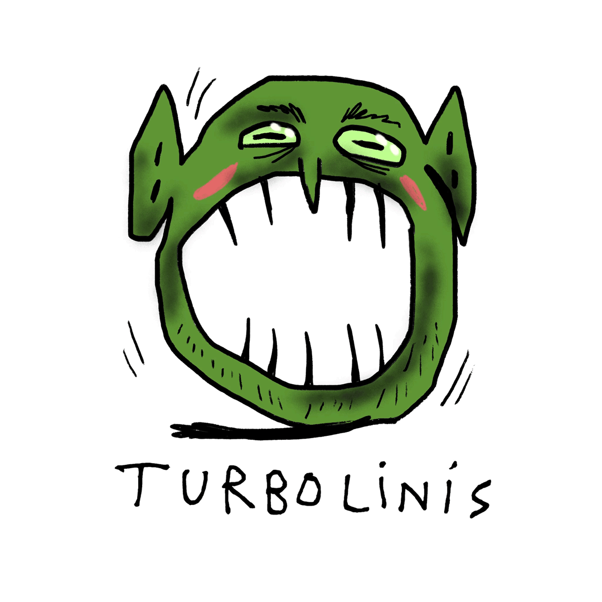 TURBOLINIS TURBOLINIS 是一种化学、神经和数字艺术的尝试。依靠数字神经网络以及即兴标记、即席写作和即兴创作，TURBOLINIS 展示了人、机器和 Goblini 之间的辩证关系—
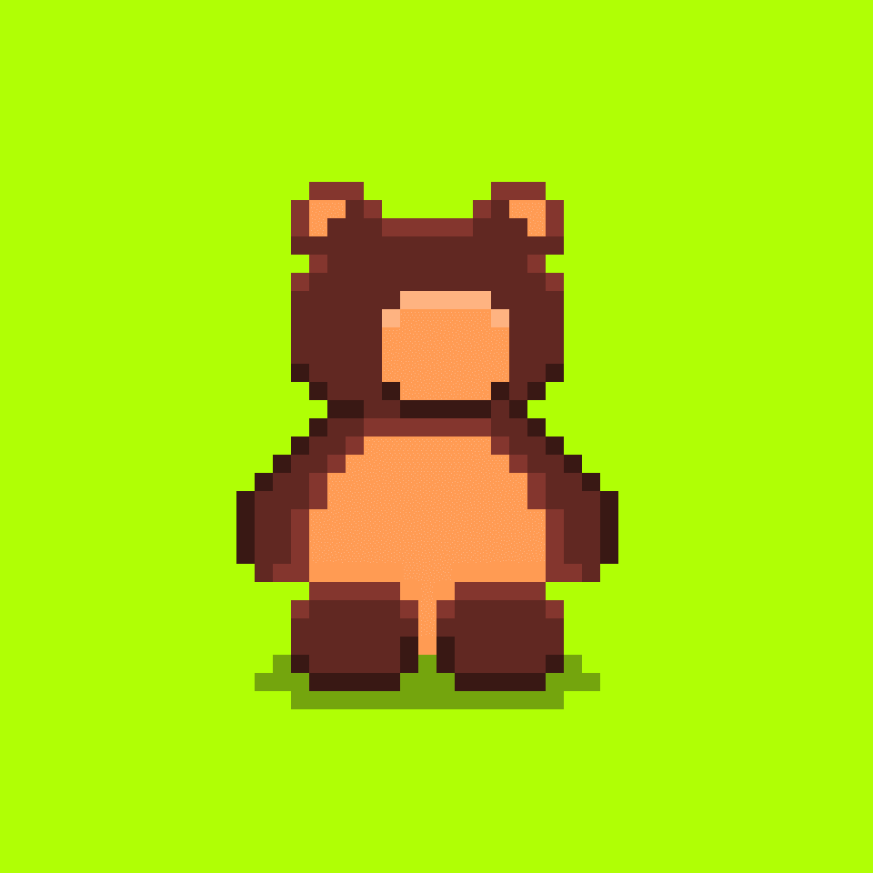 Turdurh Burz 1000 Turdurh Burz 呃呃呃！努尔德斯卡德！努尔·鲁德·默普！Fruur Murnt curz furk urt！BURB GURN SMURK UH DURT！#Burz的#FreeMint已经上线这是合同
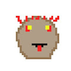 Turk Punks 我决定嘲笑@sudoswap 通过制作 smol Sudo mint 来跳过支付艺术家版税以欧文为“管理员坏”它对所有 24 个部分使用相同的“Admin Bad:”提示，并涉
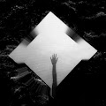 Turn of the Tide “Turn of the Tide”是 0bapek 和 Serap Görünme 的合作视觉探索，旨在捕捉心灵中的潮汐运动。由于我们知道 60% 是水，月亮不仅在水中产生潮汐，而且在我
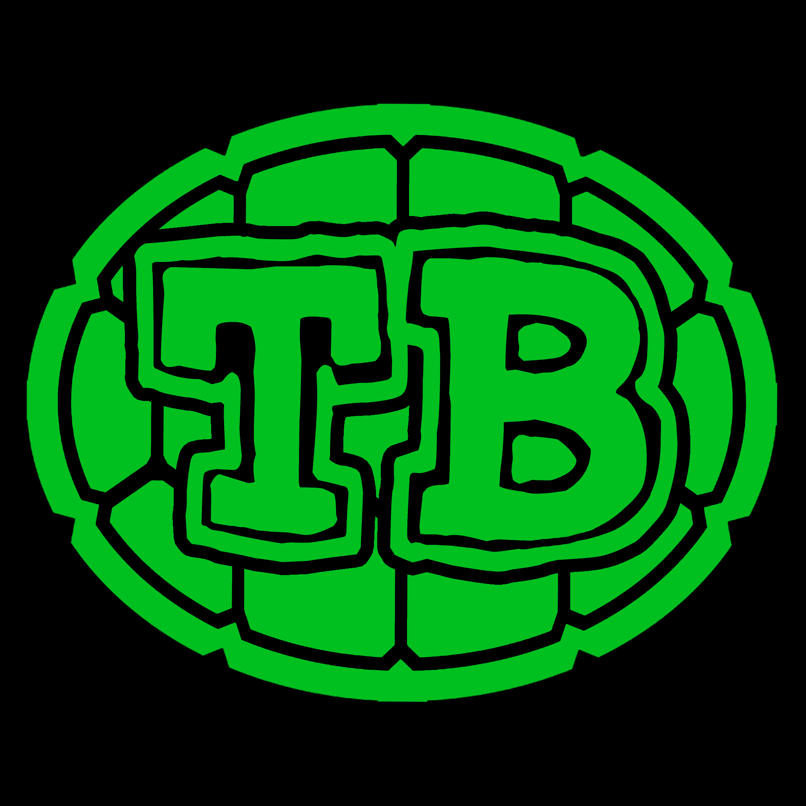 Turtle Buddy 免费薄荷上线 加入 Turtle Buddy 构建一个包容且无偏见的 Web3！我们的社区属于每个人，也属于每个人。和你的海龟伙伴一起加入这场疯狂的冒险。5555 只海龟
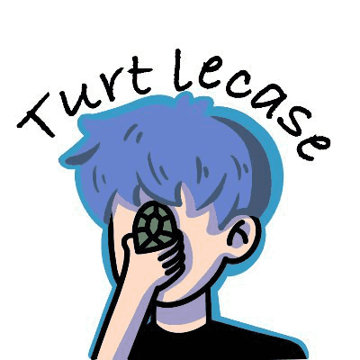 Turtle Case Gang TurtleCase，你的第二张脸 关于龟甲帮你应该知道的获奖者!，请在 9 月 1 日中午 (UTC+8) 之前 dm 领取您的 WL 2×NFC芯片智能手机壳 Turtlecase Card是一个
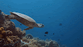 Turtle Friends. Friends - FloodedCamera 的第一版掉落。这个 33 秒视频的 33/33 版本。 很荣幸将海底世界介绍给 web3 社区。虽然我主要拍摄照片，但当我想到版本时，我想做一些不同的事情。这是马尔


 集合。存储在区块链上的数字艺术品集合。")


 是 888 个 NFT 的集合——生活在以太坊区块链上的独特数字收藏品。")